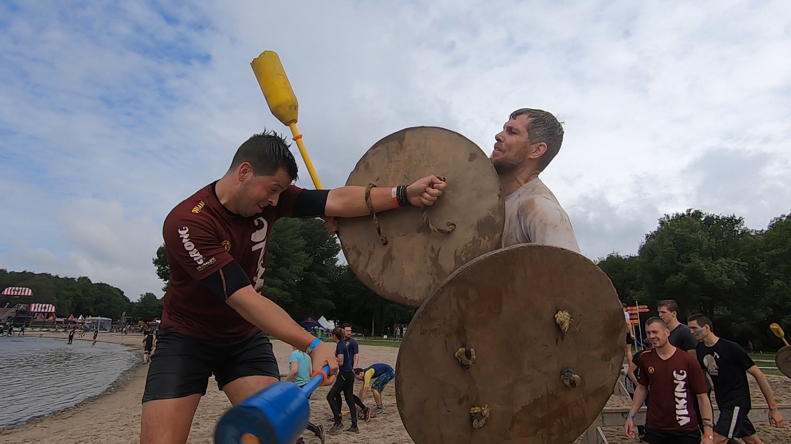

Voeding
Klein stukje over voeding voor een run.
Goede voeding is cruciaal om optimaal te kunnen presteren tijdens een obstaclerun.
Hier zijn enkele voedingstips als je aan het trainen bent voor een obstaclerun:
Eet koolhydraten: Koolhydraten zijn de belangrijkste energiebron voor het lichaam. Zorg ervoor dat je voor de obstaclerun voldoende koolhydraten eet, zoals volkorenbrood, pasta, rijst en fruit.
Drink voldoende water: Het is belangrijk om gehydrateerd te blijven tijdens een obstaclerun, vooral als het warm is. Drink daarom voldoende water voor en tijdens de run om uitdroging te voorkomen.
Eet eiwitten: Eiwitten zijn belangrijk voor het herstel van spieren na intensieve lichamelijke activiteit. Eet daarom eiwitrijke voedingsmiddelen zoals kip, vis, eieren en yoghurt.
Eet gezonde vetten: Gezonde vetten zijn een belangrijke bron van energie voor het lichaam en helpen ook om de honger te onderdrukken. Eet daarom gezonde vetten zoals noten, avocado's en olijfolie.
Eet niet te veel voor de run: Eet niet te veel voordat je gaat rennen, want dat kan een ongemakkelijk gevoel geven. Probeer een licht ontbijt of snack te eten ongeveer twee uur voor de run. Een half uurtje voor de run kun je nog een banaan of energiereep eten.
Neem een energiereep of gel mee: Tijdens een obstaclerun kan het handig zijn om een energiereep of gel bij je te hebben voor extra energie. En bij elke drankpost drinken, ook al heb je geen dorst is het belangrijk om toch de aangeboden drank te pakken.
Het is belangrijk om te onthouden dat elk lichaam anders is en dat wat voor de ene persoon werkt, mogelijk niet voor de andere persoon werkt. Experimenteer met verschillende soorten voeding en ontdek wat het beste voor jou werkt.
.
Trainingsschema
Kracht en uithoudingsvermogen.
Een goed trainingsschema voor een obstaclerun moet gericht zijn op het opbouwen van kracht, uithoudingsvermogen en flexibiliteit. Hier zijn wat tips voor het opstellen van een trainingsschema voor een obstaclerun.
Looptraining: Om de cardiovasculaire conditie te verbeteren, is het belangrijk om regelmatig te trainen met hardlopen. Begin met een rustige opbouw in de afstand en tempo, en voeg intervaltraining en heuveltraining toe om de intensiteit te verhogen. Na een tijdje breid je rustige duurloopjes langzaam uit naar de afstand van de run die je wilt lopen.
Krachttraining: Om de kracht te vergroten, is het belangrijk om te werken aan oefeningen die gericht zijn op het hele lichaam. Oefeningen zoals squats, push-ups, sit-ups, pull-ups, planken, wall-sit, stang hangen en burbees zijn bijzonder effectief voor het opbouwen van kracht en uithoudingsvermogen.
Flexibiliteitstraining: Om de flexibiliteit te verbeteren, is het belangrijk om regelmatig te rekken, strechen en te foamrollen om de spieren los te maken en te ontspannen. Planken is een goede oefening om de core stabiliteit te verbeteren en de rompspieren te versterken.
Obstacle-specifieke training: Als je weet welke hindernissen in de run zitten, kun je proberen om specifiek op die obstacles te trainen. Over een muurtje klimmen, monkey bars, ergens onder door kruipen of lekker ergens aan hangen om de gripkracht te verbeteren.
Naast de trainingsdagen is het heel belangrijk om rustdagen in te plannen (ik weet het, dat valt niet mee), maar het lichaam heeft echt tijd nodig om te herstellen van alle trainingen. Probeer minimaal 2 rustdagen per week in te plannen om blessures te voorkomen en overtraining te verminderen. Zorg voor voldoende slaap en eet gezond om je lichaam te laten herstellen en te groeien, en schroom niet om een extra dag rust te pakken als je lichaam daar om vraagt.
Voorbeeldschema
Voor een run van een kilometer of 12 tot 14.

Een obstacle run schema van een kilometer of 12 tot 14 kan er als volgt uitzien: (vergeet niet voor elke run een goede warming-up te doen van minimaal 10 minuten).
Week 1:
• Maandag: 4km hardlopen + (2 keer 10 burpees) + (2 keer 10 push-ups).
• Woensdag: 4km hardlopen + (2 keer 30 seconden stang hangen ) + (2 keer 10 sit-ups).
• Zaterdag: 5km hardlopen + (2 keer 15 squats) + (2 keer 15 lunges).
Week 2:
• Maandag: 5km hardlopen + (2 keer 10 push-ups) + (10 keer over een muur klimmen).
• Woensdag: 3km hardlopen + (2 keer 10 jumping-jacks) + (2 keer 15 jump-squats).
• Zaterdag: 6km hardlopen + (2 keer 15 sit-ups) + (3 keer een halve minuut planken).
Week 3:
• Maandag: 4km hardlopen + (10 keer box jumps) + (monkey bars 4 keer op en neer).
• Woensdag: 4km hardlopen + (5 keer 30 seconden stanghangen) + (2 keer 15 squats).
• Zaterdag: 8km hardlopen + (bankhangen met een biertje of wijntje).
Week 4:
• Maandag: 5km hardlopen + (2 keer 10 push-ups) + (3 keer 30 seconden planken).
• Woensdag: 7km hardlopen + (3 keer 15 sit-ups) + (45 seconden wall-sit).
• Zaterdag: 4km hardlopen + (3 keer 20 jumping-jacks) + (6 keer 20 seconden stanghangen).
Week 5:
• Maandag: 5km hardlopen + (2 keer 10 box jumps) + (3 keer 10 push-ups).
• Woensdag: 5km hardlopen + (2 keer 7 pull-ups of stanghangen) + (3 keer 15 sit-ups).
• Zaterdag: 10km hardlopen + (3 keer 15 squats) + (2 keer 25 lunges).
Week 6:
• Maandag: 4km hardlopen + (3 keer 10 sit-ups) + (2 keer een minuut planken).
• Woensdag: 6km hardlopen + (3 keer 15 push-ups) + (15 keer over een muur klimmen).
• Zaterdag: 6km hardlopen + (bankhangen met een schaaltje chips).
Week 7:
• Maandag: 6km hardlopen + (3 keer 10 jumping-jacks) + (monkey bars 6 keer op en neer).
• Woensdag: 5km hardlopen + (6 keer 30 seconden stanghangen) + (3 keer 20 seconden wall-sit).
• Zaterdag: 11km hardlopen + (3 keer 10 burbees) + (4 keer 30 seconden planken).
Week 8:
• Maandag: 6km hardlopen + (2 keer 10 push-ups) + (2 keer 15 sit-ups).
• Woensdag: 3km hardlopen + (2 keer 20 squats) + (2 keer 30 seconden stanghangen).
• Zaterdag: Dag van de run ( niet nadenken, maar lekker genieten en plezier hebben).
Opmerkingen:
Zorg voor voldoende rust tussen de oefeningen en trainingsdagen.
Bouw geleidelijk de intensiteit van de training op om blessures te voorkomen.
Denk aan de hydratatie, vergeet niet te drinken!! Water, water en nog eens water!!